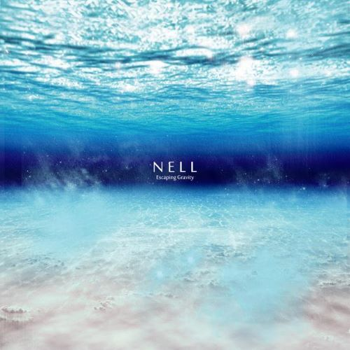

SSU Global Media / 20211608
좋아하는 가수와 그들의 음악을 소개합니다.
#TOP_10
🎀 제가 가장 좋아하는 10개의 앨범입니다! 앨범 커버 이미지를 누르시면 각 앨범에서 제가 가장 좋아하는 수록곡을 들을 수 있는 YouTube 링크로 연결됩니다.


#SUMMIT
🎵 저는 숭실대학교 IT대학 밴드 소모임 ‘SUMMIT’에서 활동 중입니다.
제가 공연하는 모습을 보실 수 있습니다!
-
그것이 우리다
2022.05.16. 봄 축제라는 큰 무대에 설 수 있어서 매우 행복했습니다.
2022 숭실대학교 봄 축제 :: SSU:torial ::
- SET LIST
1. 여행 - 볼빨간 사춘기
2. Time Lapse - 태연
3. 한 페이지가 될 수 있게 - DAY6- Vocal. 박시윤 (글로벌미디어학부 21)
- Guitar 1. 김경수 (글로벌미디어학부 22)
- Guitar 2. 김성윤 (AI융합학부 21)
- Bass. 장우영 (글로벌미디어학부 21)
- Piano. 윤지영 (컴퓨터학부 21)
- Drum. 김하빈 (글로벌미디어학부 21)
-
내 꿈은 파티시엘(꿈빛파티시엘 op.) - 아이유
2021년 겨울 SUMMIT 정기공연 당시 공연한 곡입니다. 기존 상큼한 동요에서 락 버전으로 편곡하여 짧고 강렬하게 첫 순서를 장식했습니다.
(band cover by NULL)- Vocal. 황태욱 (전자정보공학부 18)
- Guitar 1. 임가균 (컴퓨터학부 18)
- Guitar 2. 김주성 (전자정보공학부 19)
- Bass. 김현우 (전자정보공학부 19)
- Piano. 장우영 (글로벌미디어학부 21)
- Drum. 김하빈 (글로벌미디어학부 21)
-
넌 내게 반했어 - 노브레인
2021년 겨울 SUMMIT 정기공연 당시 공연한 곡입니다. 꿈빛파티시엘 오프닝 곡으로 화끈하게 달아오른 분위기를 이어가기 위해 두 번째 순서로 준비했습니다.
(band cover by NULL)- Vocal. 황태욱 (전자정보공학부 18)
- Guitar 1. 임가균 (컴퓨터학부 18)
- Guitar 2. 김주성 (전자정보공학부 19)
- Bass. 김현우 (전자정보공학부 19)
- Piano & Chorus. 장우영 (글로벌미디어학부 21)
- Drum. 김하빈 (글로벌미디어학부 21)
-
에라 모르겠다 - BIGBANG
2021년 겨울 SUMMIT 정기공연 당시 공연한 곡입니다. 공연장 분위기에 걸맞게 매력적인 기타 사운드가 돋보이도록 편곡하였습니다.
(band cover by NULL)- Vocal. 황태욱 (전자정보공학부 18)
- Guitar 1. 임가균 (컴퓨터학부 18)
- Guitar 2. 김주성 (전자정보공학부 19)
- Bass. 김현우 (전자정보공학부 19)
- Piano. 장우영 (글로벌미디어학부 21)
- Drum. 김하빈 (글로벌미디어학부 21)
-
LoveSick Girls - BLACKPINK
2021년 겨울 SUMMIT 정기공연 당시 공연한 곡입니다. 기존 여자 아이돌 곡을 남보컬에 밴드 사운드로 편곡하여 공연을 절정으로 치닫게 합니다.
(band cover by NULL)- Vocal. 황태욱 (전자정보공학부 18)
- Guitar 1. 임가균 (컴퓨터학부 18)
- Guitar 2. 김주성 (전자정보공학부 19)
- Bass. 김현우 (전자정보공학부 19)
- Piano & Chorus. 장우영 (글로벌미디어학부 21)
- Drum. 김하빈 (글로벌미디어학부 21)
-
행운을 빌어요 - 페퍼톤스
2021년 겨울 SUMMIT 정기공연 당시 공연한 곡입니다. 곡을 들으시는 모두에게 행운만이 가득하길 바라는 마음에서 마지막 순서로 준비했습니다.
(band cover by NULL)- Vocal. 황태욱 (전자정보공학부 18)
- Guitar 1. 임가균 (컴퓨터학부 18)
- Guitar 2. 김주성 (전자정보공학부 19)
- Bass. 김현우 (전자정보공학부 19)
- Piano & Chorus. 장우영 (글로벌미디어학부 21)
- Drum. 김하빈 (글로벌미디어학부 21)
-
이웃에 방해가 되지 않는 선에서 - 브로콜리 너마저
2021년 겨울 SUMMIT 정기공연 당시 공연한 곡입니다. 매력적인 베이스 솔로가 돋보이는 곡으로, 김사장의 첫 시작을 담당했습니다.
(band cover by 김사장)- Vocal & A.G. 장우영(글로벌미디어학부 21)
- E.G. 김바울(글로벌미디어학부 21)
- Bass. 김현우(전자정보공학부 19)
- Piano. 김건창(글로벌미디어학부 21)
- Drum. 김하빈(글로벌미디어학부 21)
-
기억을 걷는 시간 - 태연
2021년 겨울 SUMMIT 정기공연 당시 공연한 곡입니다. 감미로운 피아노 반주가 익숙한 멜로디가 인상적인 곡입니다. (원곡 : NELL)
(band cover by 김사장)- Vocal. 장우영(글로벌미디어학부 21)
- Guitar & Chorus. 김바울(글로벌미디어학부 21)
- Bass. 김현우(전자정보공학부 19)
- Piano. 김건창(글로벌미디어학부 21)
- Drum. 김하빈(글로벌미디어학부 21)
-
고백 - 장범준
2021년 겨울 SUMMIT 정기공연 당시 공연한 곡입니다. 귀여운 기타리스트 바울이의 보컬 도전 그리고 저의 짤막한 리코더 연주가 포인트입니다.
(band cover by 김사장)- Chorus & Recorder. 장우영(글로벌미디어학부 21)
- Vocal & Guitar. 김바울(글로벌미디어학부 21)
- Bass. 김현우(전자정보공학부 19)
- Piano. 김건창(글로벌미디어학부 21)
- Drum. 김하빈(글로벌미디어학부 21)
-
Must Have Love - SG워너비&브라운아이드걸스
2021년 겨울 SUMMIT 정기공연 당시 공연한 곡입니다. 며칠 남지 않은 크리스마스를 앞두고 캐롤을 마지막 곡으로 장식하였습니다.
(band cover by 김사장)- Vocal. 장우영 (글로벌미디어학부 21)
- Vocal & Guitar. 김바울 (글로벌미디어학부 21)
- Bass. 김현우 (전자정보공학부 19)
- Piano. 김건창 (글로벌미디어학부 21)
- Drum. 김하빈 (글로벌미디어학부 21)
#NELL
🎧 대한민국의 모던 록밴드, 김종완(보컬, 기타, 키보드), 이재경(기타, 키보드), 이정훈(베이스, 탬버린, 키보드, 코러스), 정재원(드럼, 코러스)
🎧 넬이라는 이름은 조디 포스터 주연의 영화 넬에서 따왔다고 한다. 극 중 주인공 넬은 인간사회와 단절된 생활을 하느라 아무도 이해하지 못하는 언어를 구사하는데, 그런 것처럼 자신들도 자신만의 음악으로 세상과 소통하겠다는 의미를 담았다고 한다.
🎧 넬이라는 이름은 조디 포스터 주연의 영화 넬에서 따왔다고 한다. 극 중 주인공 넬은 인간사회와 단절된 생활을 하느라 아무도 이해하지 못하는 언어를 구사하는데, 그런 것처럼 자신들도 자신만의 음악으로 세상과 소통하겠다는 의미를 담았다고 한다.
- Speechless
- Let it rain
- Walk Through Me
- Healing Process
- Separation Anxiety
- Slip Away
- Holding onto Gravity
-  Escaping Gravity
- Newton's Apple
- C
- COLORS IN BLACK
- Moments in Between
- Let's Take a Walk
- The Trace
- 행복했으면 좋겠어
- Glow in the dark
- Christmas In NELL's ROOM
- 청춘연가
- 그리워하려고 해
- 부서진
- NELL X GROOVYROOM
- Northern Lights
#PEPPERTONES
🎧 신재평과 이장원으로 이루어진 남성 2인조 밴드이자 프로듀싱 유닛.
🎧 PEPPERTONES는 무료함에 지친 두 친구의 작당으로 시작되었습니다. 2003년경부터 지금까지 인디씬을 중심으로 느리지만 꾸준하게 활동하며 진보하고 있습니다. 우리는 밝고 긍정적인 음악을 지향하는 프로듀싱 유니트입니다.
🎧 우울증을 위한 뉴-테라피 2인조 밴드라는 장난스러운 모토로 시작하여 어느덧 여러 사람들과 함께하고 영향 받으며 성장해 왔습니다. 우리가 만들어가는 밝고 긍정적인 음악들의 가치를 믿고 있습니다.
🎧 PEPPERTONES는 무료함에 지친 두 친구의 작당으로 시작되었습니다. 2003년경부터 지금까지 인디씬을 중심으로 느리지만 꾸준하게 활동하며 진보하고 있습니다. 우리는 밝고 긍정적인 음악을 지향하는 프로듀싱 유니트입니다.
🎧 우울증을 위한 뉴-테라피 2인조 밴드라는 장난스러운 모토로 시작하여 어느덧 여러 사람들과 함께하고 영향 받으며 성장해 왔습니다. 우리가 만들어가는 밝고 긍정적인 음악들의 가치를 믿고 있습니다.


#THORNAPPLE
🎧 THORNAPPLE. 쏜애플. 2009년 결성된 대한민국의 4인조 인디밴드.
🎧 풀밴드 편성 기준으로, 2009년 12월 24일에 클럽 바다비에서 첫 공연을 가지며 데뷔하였다. 2010년 7월 첫번째 정규 앨범 '난 자꾸 말을 더듬고 잠드는 법도 잊었네' 를 발매하였으며, 앨범 발매 직후 윤성현과 심재현의 군 입대로 2년여 간의 공백기를 가지다 2012년 12월에 복귀, 2013년 6월 해피로봇 레코드와 전속 계약을 맺고 1년 후 2집 '이상기후'를 발매하였고 2016년에는 EP앨범 '서울병', 2019년에는 3집 '계몽'을 발매하며 현재 인디씬에서 티켓파워가 가장 강력한 밴드 중 하나이다.
🎧 풀밴드 편성 기준으로, 2009년 12월 24일에 클럽 바다비에서 첫 공연을 가지며 데뷔하였다. 2010년 7월 첫번째 정규 앨범 '난 자꾸 말을 더듬고 잠드는 법도 잊었네' 를 발매하였으며, 앨범 발매 직후 윤성현과 심재현의 군 입대로 2년여 간의 공백기를 가지다 2012년 12월에 복귀, 2013년 6월 해피로봇 레코드와 전속 계약을 맺고 1년 후 2집 '이상기후'를 발매하였고 2016년에는 EP앨범 '서울병', 2019년에는 3집 '계몽'을 발매하며 현재 인디씬에서 티켓파워가 가장 강력한 밴드 중 하나이다.
#YOUNHA
🎧 황선업 평론가, SUPERSONIC
생각해보면 이상한 현상이라 할 만 했다. 음원 사이트에서는 50위안에 겨우 랭크되고 있는 앨범의 오프라인 초도물량이 일부 레코드샵에서는 품귀현상을 빚고 있다니. 이처럼 윤하에게는 '저물어가는 아날로그 시대의 맥을 잇는 아티스트'라는 크나큰 상징성이 존재했다. 멜로디나 편곡이 허술해도 이를 보컬 자체로 끌어올릴 수 있는 몇 안 되는, 음악에의 순수의지를 한 아름 안은 그녀의 등장은 온라인과 기획형 아이돌에 정을 붙이지 못하는 이들에게 있어 눈부시게 빛나는 동시대적 대안임에 분명했다.
🎧 김형석, 복면가왕에 출연한 윤하에게
노래를 하는 여자 가수 지망생들에게 꼭 하나 해주고 싶은 얘기는, '윤하를 공부해라'. 발성, 호흡, 음정, 안정감 이 모든 것들이 최고인 보컬입니다.
생각해보면 이상한 현상이라 할 만 했다. 음원 사이트에서는 50위안에 겨우 랭크되고 있는 앨범의 오프라인 초도물량이 일부 레코드샵에서는 품귀현상을 빚고 있다니. 이처럼 윤하에게는 '저물어가는 아날로그 시대의 맥을 잇는 아티스트'라는 크나큰 상징성이 존재했다. 멜로디나 편곡이 허술해도 이를 보컬 자체로 끌어올릴 수 있는 몇 안 되는, 음악에의 순수의지를 한 아름 안은 그녀의 등장은 온라인과 기획형 아이돌에 정을 붙이지 못하는 이들에게 있어 눈부시게 빛나는 동시대적 대안임에 분명했다.
🎧 김형석, 복면가왕에 출연한 윤하에게
노래를 하는 여자 가수 지망생들에게 꼭 하나 해주고 싶은 얘기는, '윤하를 공부해라'. 발성, 호흡, 음정, 안정감 이 모든 것들이 최고인 보컬입니다.

GUEST ZONE
🎀 당신이 제게 추천하고 싶은 노래가 있나요? 여기에 남겨주세요!
인생 노래 추천하기!